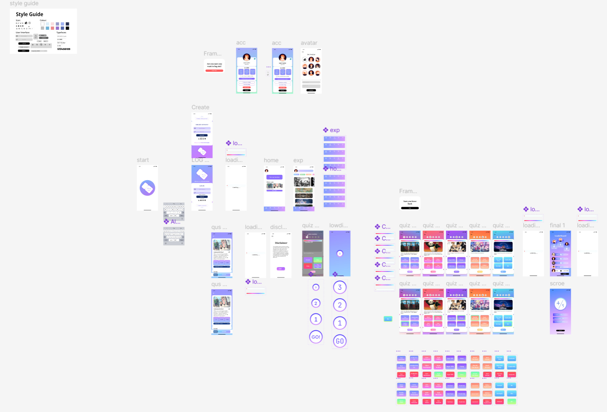

UI/UX

Inspired by Wassily Kandinsky's Composition 8, this project is an interactive visual experiment that explores the intersection of randomness and artistic logic. By transforming the screen into an open canvas, I utilized stochastic algorithms to allow users to "compose" unique abstract paintings through simple clicks. Each interaction generates a random geometric shape coupled with a specific musical scale mapped to its coordinates, creating a synesthetic experience where sight meets sound.
The design prioritizes "intuitive efficiency," balancing the unpredictability of visual disorder with the harmony of an ordered auditory hierarchy, ultimately forming a creative closed loop that empowers users to participate in the act of digital creation.

View
This is a prototype of a quiz software application that covers the entire process from login to taking the quiz and viewing the results.
It includes features such as a personal dashboard, answer selection, and a leaderboard.